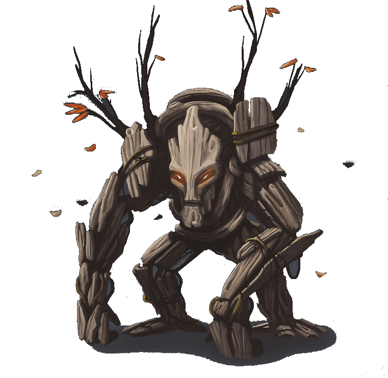

Scarlet Horizons
Wood Golem

• No. Enc: 1 (2d2+1)
• Alignment: Neutral
• Movement: 30'
• Armor Class: 5
• Hit Dice: 6+4 (typically 30-33 HP)
• BAB +6
• Attacks: 1 slap
• Damage: 2d6
• Save: F6
• Morale: 12
• Hoard: 3d4 chroma, 1d4+4 royals, 1d4+8 copper (30% it's Red Cuprous)
Experience Yielded: 700 per wood golem defeated
Wood golems have resistance to cold, electricity, acid, and piercing damage.